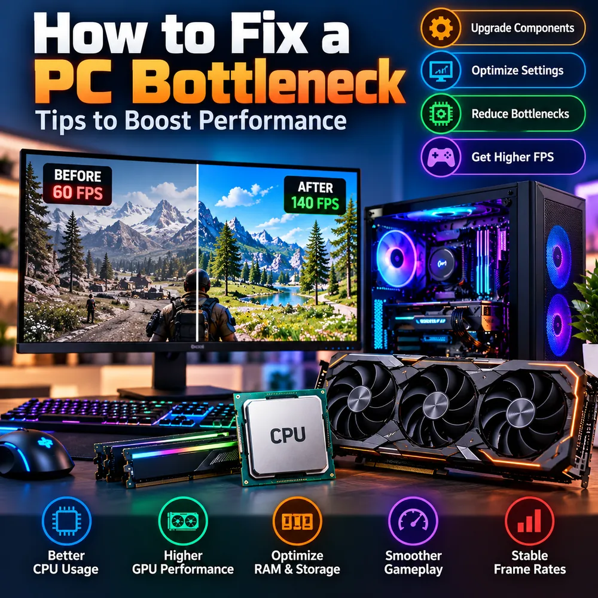

How to Fix a PC Bottleneck and Boost FPS: Tips in the Right Order
Fixing a bottleneck is not about buying the most expensive part. It is about finding the real limit, removing it with the cheapest change that works, and checking the result. This guide lists the tips in the order that saves the most money and time, and shows how a bottleneck calculator fits in before and after each change.

The quick answer
To fix a PC bottleneck, work through the fixes from cheapest to most expensive: settings and software first, then RAM and storage, then cooling, and only then a new CPU or GPU. At every stage, measure again. The goal is not to remove the bottleneck completely, because something always limits performance. The goal is to move the limit to a place where your PC performs the way you want.
A realistic expectation matters here. The graphic above shows 60 FPS rising to 140 FPS. A change that large usually means a specific, fixable problem was found, such as a frame cap, memory running at a slow default speed, heavy thermal throttling or a game installed on a slow drive. A typical well-tuned system improves by far less, and that is perfectly normal.
Step 1: Get a baseline with a bottleneck calculator
Before changing anything, record where you stand. Enter your processor and graphics card into a PC bottleneck calculator to see the estimated balance for your resolution, then note your actual frame rate and usage in one repeatable game scene. You now have two reference points: an estimate and a measurement.
If you are comparing tools, here is what makes a bottleneck calculator trustworthy:
- It explains its method. A good tool says how it reaches a number instead of just showing a score. You can read how ours works in the methodology section.
- It asks for resolution and use case. The same CPU and GPU behave very differently at 1080p and 4K.
- It stays honest about limits. An estimate is not a benchmark, and any tool claiming otherwise should be treated with caution.
- It uses current hardware. Outdated databases give misleading answers for new parts.
People use many names for the same idea, including bottleneck calc, bottleneck checker and calculator bottleneck. The name matters less than whether the result is explained and verifiable. If you are looking for the best bottleneck calculator, favor the one that shows its reasoning and lets you cross-check with real tests.
Step 2: Fix the free things first
Many systems are held back by settings rather than hardware. Check these before spending anything:
- Enable XMP or EXPO in the BIOS so your RAM runs at its rated speed instead of a slower default.
- Confirm your monitor refresh rate in Windows and your graphics control panel. A monitor still set to 60 Hz hides everything above it.
- Use the graphics card output. The display cable must be in the GPU, not the motherboard.
- Check frame caps and V-Sync. A cap at 60 FPS looks like a bottleneck but is just a setting.
- Set a performance power mode, especially on laptops, and plug in the charger while testing.
- Close background apps such as browsers, launchers and RGB software while gaming.
- Update graphics drivers, and do a clean reinstall if a problem began after an update.
Step 3: Tune graphics settings for the limit you found
Settings affect the CPU and GPU differently, so the right change depends on what your test showed.
- GPU-limited: lower heavy settings such as shadows, volumetric effects and ray tracing, or enable DLSS, FSR or XeSS. Upscaling reduces the internal resolution, which relieves the graphics card. See our guide to DLSS, FSR and frame generation.
- CPU-limited: raising resolution or visual quality can give the GPU more work, which evens out the load and often improves smoothness. Settings that scale with CPU work, such as crowd density, view distance and simulation detail, are the ones to lower.
- Frame cap: a cap just below your monitor refresh rate can give steadier frame pacing than an unlimited frame rate, especially when the CPU is struggling.
Change one thing at a time and repeat the same test scene so you know what helped.
Step 4: Optimize RAM and storage
If memory or storage is the limit, no CPU or GPU upgrade will help.
- Check capacity. If RAM usage reaches the limit during play, add more. 16GB is a common baseline for gaming, and 32GB gives room for heavy multitasking. See whether 16GB is enough.
- Use dual-channel memory. Two matched sticks in the correct slots perform better than one stick of the same total size.
- Install games on an SSD. A mechanical hard drive causes long load times and streaming stutter in modern games. Our SSD vs HDD vs NVMe guide compares them.
Step 5: Deal with heat
A hot component slows itself down to protect itself. Dust, poor airflow, a dried-out thermal paste layer or a poorly seated cooler can all cause it. Clean filters, fans and heatsinks, check that case fans move air in at the front and out at the back or top, and consider adjusting fan curves. A thermally throttled high-end part can perform like a cheaper one, which makes the system look badly matched when it is just too hot. Our guide to thermal throttling vs CPU bottleneck explains how to tell the difference.
Step 6: Upgrade the part that is actually the limit
If the free and low-cost changes do not get you where you want to be, upgrade deliberately:
- GPU-limited and you want more FPS or higher settings: a stronger graphics card is the answer.
- CPU-limited with the GPU waiting: a faster processor helps most. Check whether it needs a new motherboard and RAM.
- Power supply: confirm it meets the new part's recommended wattage and has the right connectors. See whether a PSU can cause a bottleneck.
Run your new combination through a bottleneck calculator PC check before buying, then read benchmarks for the games you play. Our upgrade checklist covers compatibility.
Step 7: Measure again and compare
After each stage, repeat the same test and compare against your baseline. You are looking for the outcomes that matter in daily use:
- Better CPU usage, with no single thread permanently pinned.
- Higher GPU performance, with GPU usage close to its limit where you want the GPU to be the bottleneck.
- Smoother gameplay and steadier 1% lows, not just a higher average FPS.
- Stable frame rates over a long session, without sudden drops from heat or memory.
Average FPS can look fine while stutter ruins the experience. Pay attention to 1% lows and frame-time consistency. Our stuttering guide explains how to read them.
Common mistakes to avoid
- Buying a new GPU when the real limit is a frame cap or a slow drive.
- Changing five settings at once and not knowing which one helped.
- Trusting a single calculator percentage as a verdict instead of a guide.
- Testing in a menu or loading screen rather than in gameplay.
- Ignoring temperatures and then blaming the hardware.
Conclusion
The best way to fix a PC bottleneck is a disciplined one: baseline, free fixes, settings, memory and storage, cooling, then targeted upgrades, measuring after every stage. A bottleneck calculator gives you the starting estimate, and your own testing proves the result. If you take one habit from this guide, make it changing one thing at a time.
Frequently Asked Questions
What is the best way to fix a PC bottleneck?
Identify the limiting part first with monitoring, then fix it in order of cost: settings and software, RAM and storage, cooling, and only then a CPU or GPU upgrade. Measure the same test scene after each change.
Can a bottleneck calculator help me boost FPS?
It helps you plan. A calculator estimates how well your CPU and GPU match so you can decide what to upgrade or compare, but real FPS gains still depend on your game, settings and testing.
Which bottleneck calculator is the most trusted?
Look for a tool that explains its method, asks for resolution and use case, uses current hardware data and admits that its output is an estimate. Cross-check any result with real monitoring and benchmarks.
Why did my FPS not improve after changing settings?
The setting you changed may not affect the real limit. If the CPU is the limit, lowering GPU-heavy settings will not help. If a frame cap or low refresh rate is the cause, graphics settings will not matter either.
Is it worth upgrading just to remove a small bottleneck?
Usually not. A small mismatch rarely changes the experience, and the money is better spent where measurements show a clear limit, such as a GPU at full load with FPS below your target.